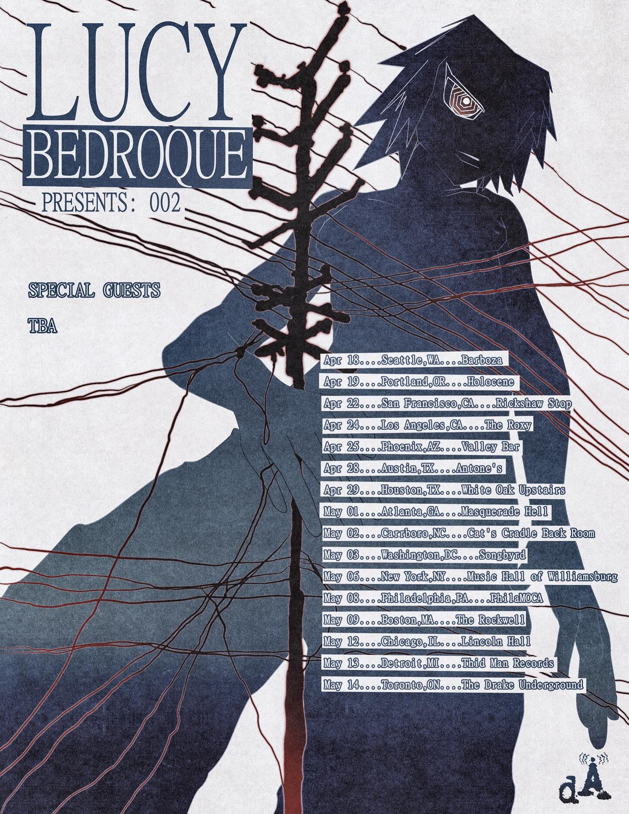
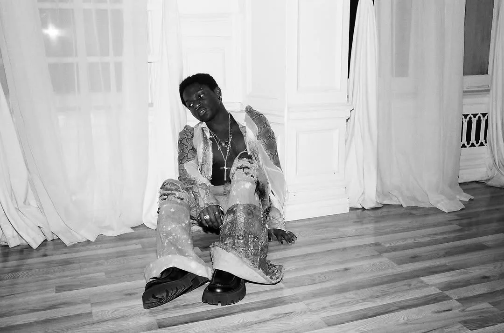

Musician, entertainer, artist, and performer. Primarily known for his wide assortment of songs and his experimental blend of rage-rap, digicore, and hyperpop, often incorporating futuristic and anime-inspired visuals into his music. |
Live concert of the song 2010 Justin Bieber, which is considered as Lucy Bedroque's breakthrough track and one of his most popular songs. |
Lucy Bedroque Tour Dates 2026002 - NORTH AMERICA TOURThese tours serve as his first major headlining trek as he rises in the rap scene. MAR-MAY |
 |
|---|
Tickets are starting as low as $35–$40 for some cities, though high-demand areas like Seattle are currently seeing much higher resale prices
Lucy has many influences in his tracks such as, “Finish Him” - Chief Keef influence, or the Sophie-influenced track “Cat’s Eye”. Green Day sample, Europop, and Novagang-influenced track “Speakers Never Learn.” Even Legend of Zelda, Caribbean drum pattern-filled, and autotuned R&B track called “How To Pretend.” “I Am Impossible” (reference to “I Am Music" by Playboi Carti) Wake Up Filthy’s fingerprints felt throughout the album.
Lucy Bedroque is one of few to incorporate the best of many sounds that make up modern-day underground rap.
Learn more about Lucy Bedroque in the About page and the Showcase page.
